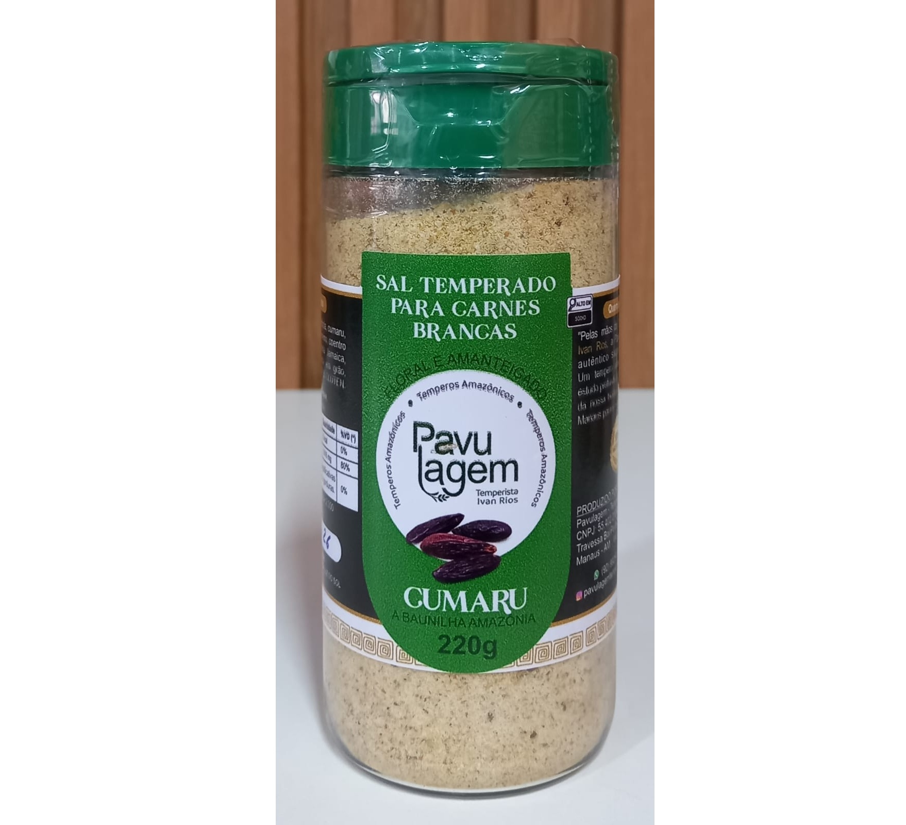
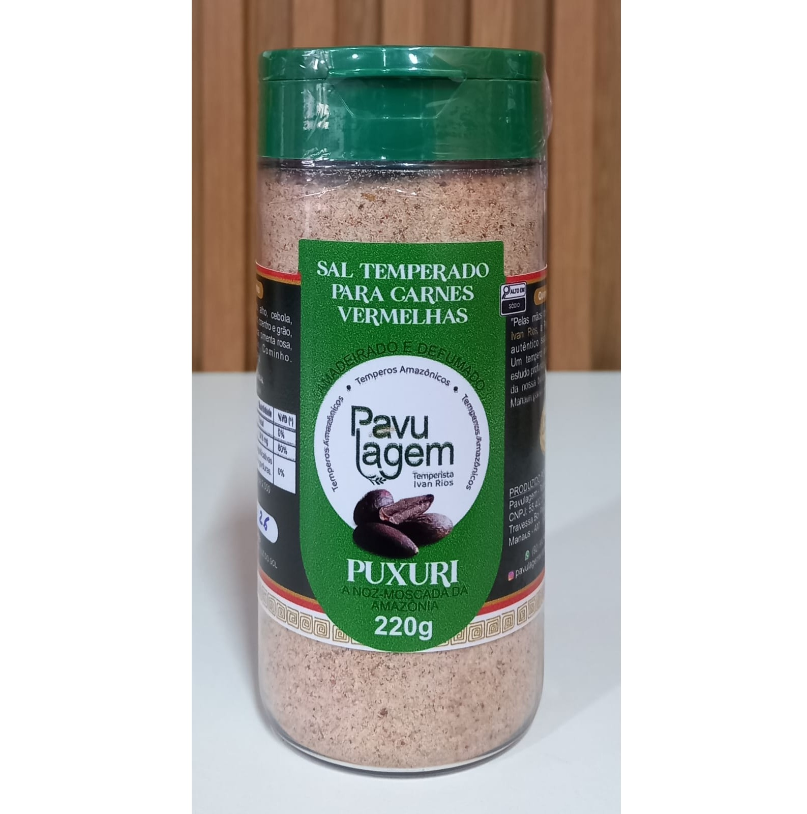
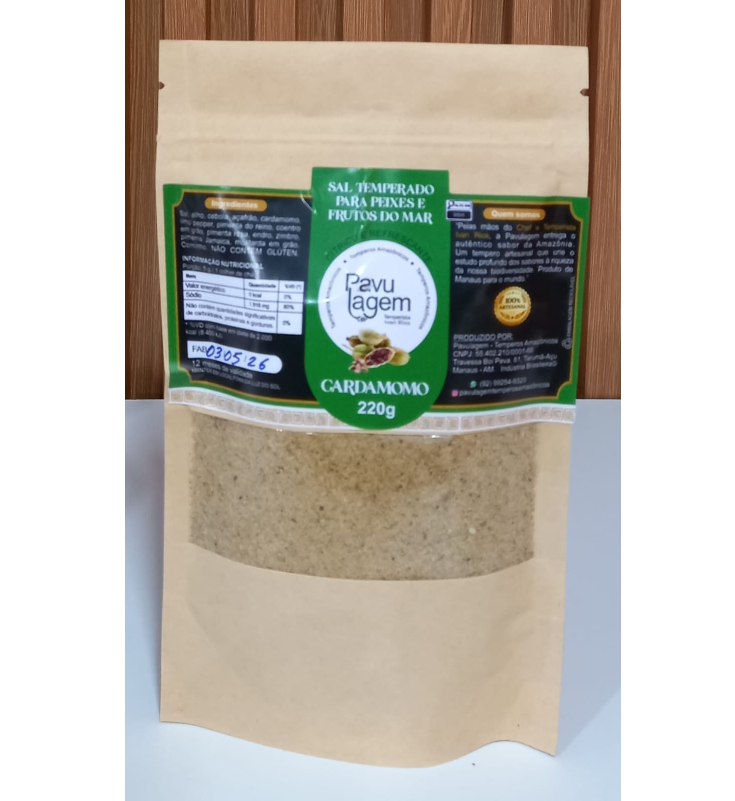
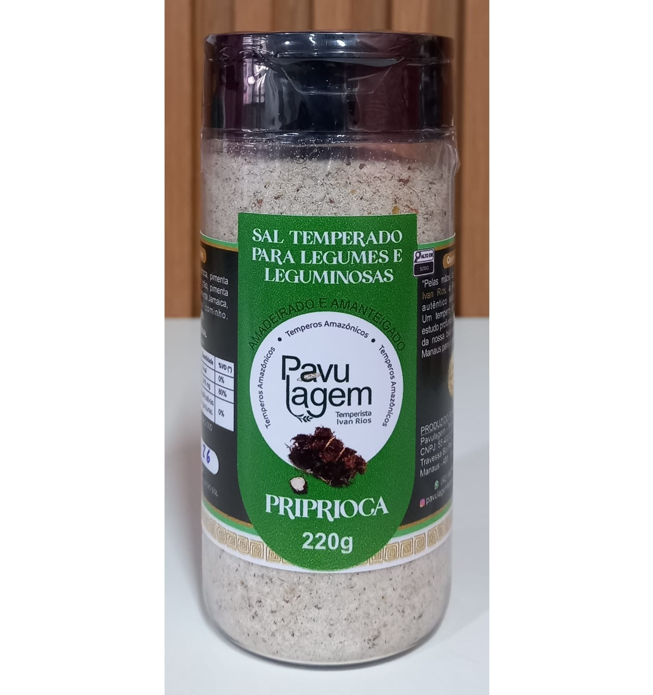
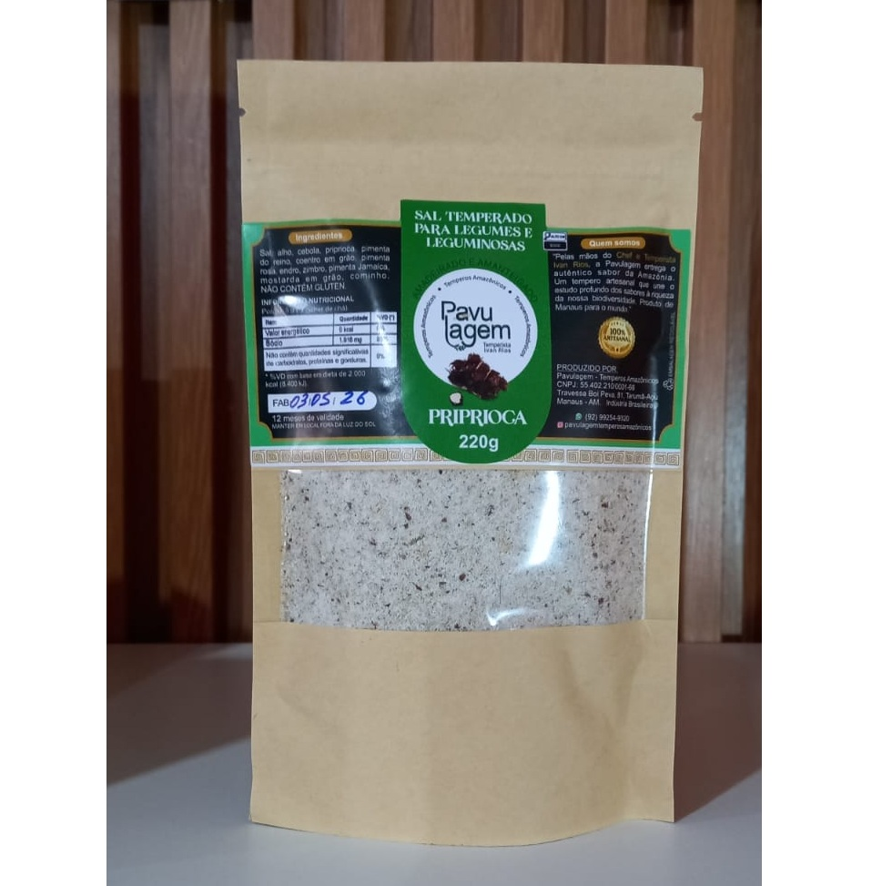
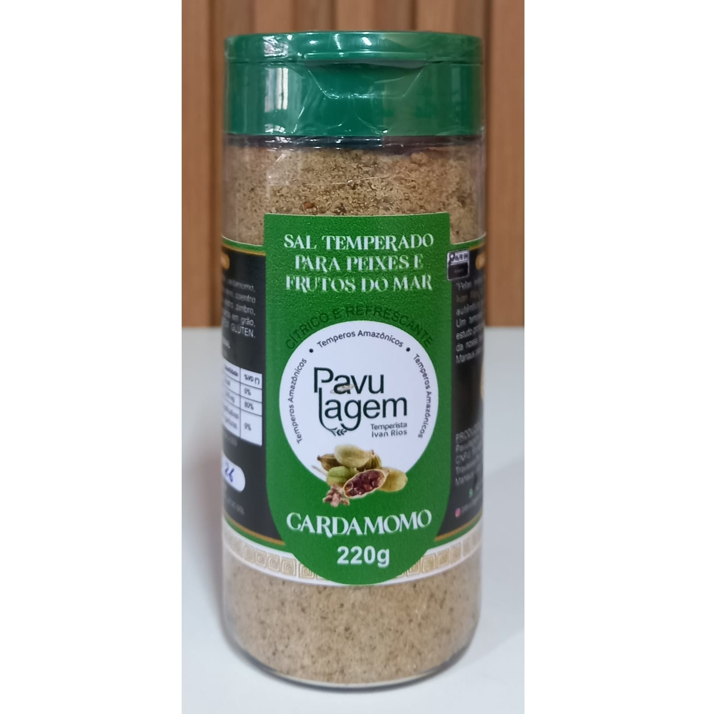
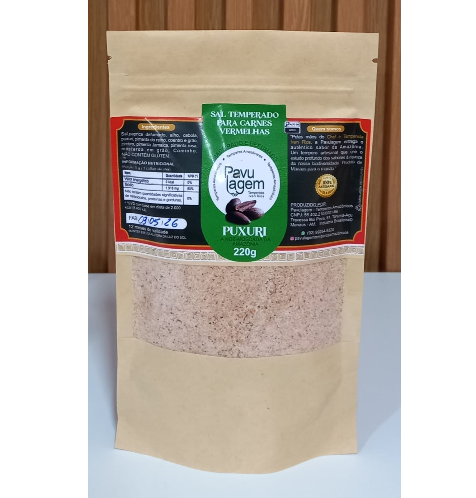
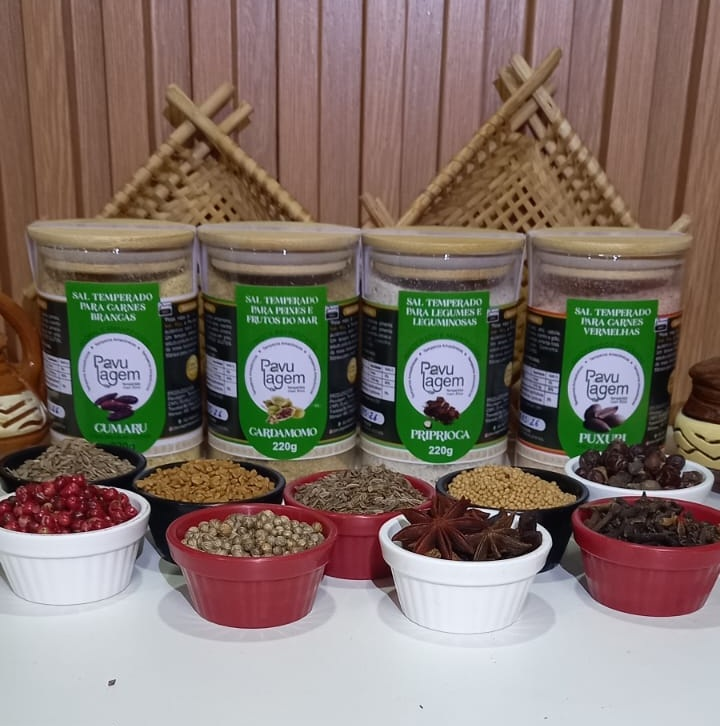
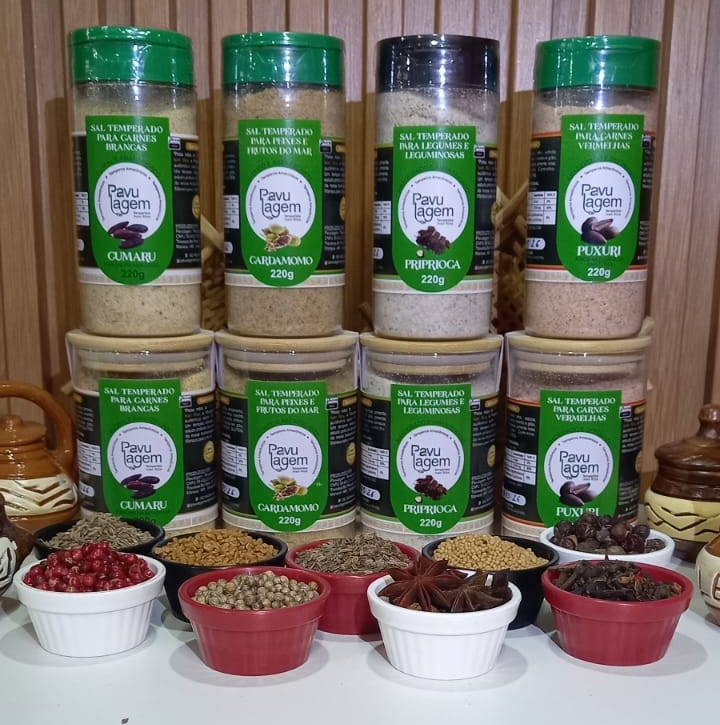
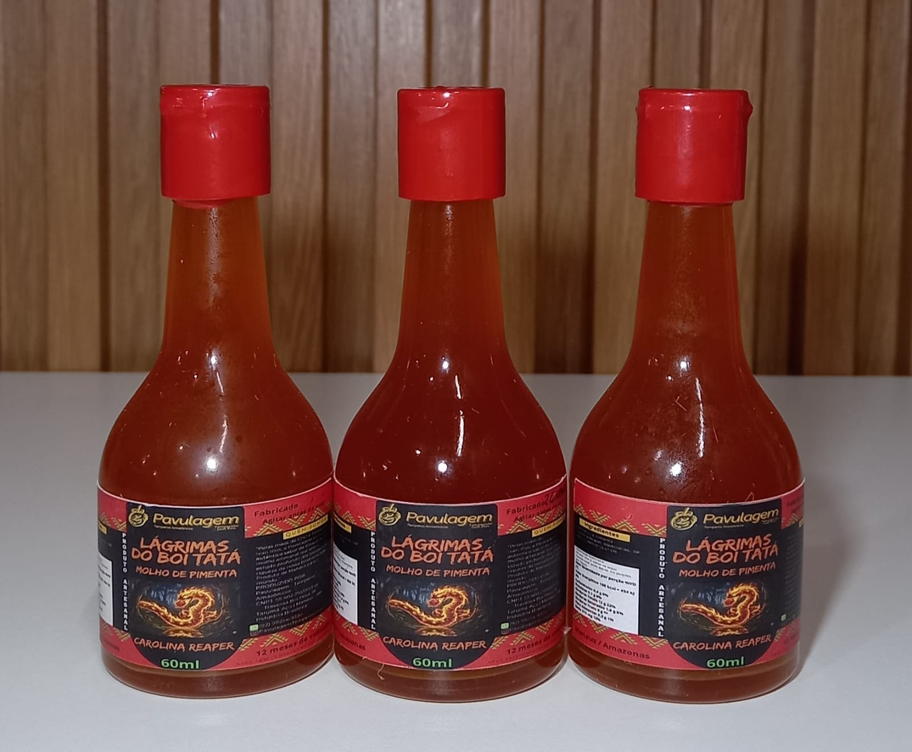

Sabores que confortam, receitas que aquecem e noites que ficam ainda melhores. Escolha o tamanho da sua tigela ou peça o rodízio e experimente todas.
Nada de tempero de pacote nem caldo pronto. Cada tigela sai da nossa cozinha do mesmo jeito que sairia da sua — só que sem você ter que lavar a louça depois.
Caldos que cozinham por horas, com receitas de família — não fórmula de restaurante.
Prove os sabores da casa no rodízio, ou escolha o tamanho de tigela ideal pra sua fome.
Decoração cuidada, cantinho limpo e clima de casa — ideal pra um jantar tranquilo.
Abrimos das 18h às 22h, de quarta a domingo — o horário certo pra desacelerar.
No rodízio, você experimenta as sopas do dia sem escolher só uma — o garçom vai passando de mesa em mesa até você dizer "chega". Se preferir ir direto ao ponto, escolha o tamanho de tigela que combina com sua fome.
188 avaliações no Google
Acesso fácil pela avenida principal, ambiente bem cuidado e decorado, tudo limpinho — e o sabor da sopa não decepciona. Ainda dá pra escolher o tamanho da tigela ou cair de cabeça no rodízio.
Cada sopa da casa começa com os temperos artesanais da Pavulagem, nossa marca parceira. Sem conservantes, moídos na medida certa — dá pra levar um pouquinho da Sopa De Casa pra temperar o que você faz aí.
100% natural · feito pela Pavulagem
Semente amazônica com notas de baunilha, canela e amêndoas.

Especiaria amazônica de aroma adocicado, ideal para bebidas e doces.

Raiz aromática com notas terrosas e amadeiradas.

Aroma elegante para sobremesas, infusões e receitas especiais.

Sabor fresco e cítrico para cafés, chás e doces.

Especiaria aromática que valoriza bebidas e sobremesas.

A baunilha amazônica com perfume intenso e sabor marcante.

Seleção de especiarias para dar mais sabor às receitas.

Ingredientes naturais que realçam aroma e sabor.

Blend exclusivo de sabor intenso e personalidade única.
Tv. Boipeva, 71 — Tarumã, Manaus - AM, 69023-035
+55 92 99449-4658
Garanta seu lugar antes que a fila do rodízio comece. Manda uma mensagem e a gente reserva pra você.
Reservar mesa pelo WhatsApp